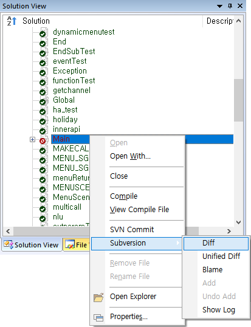
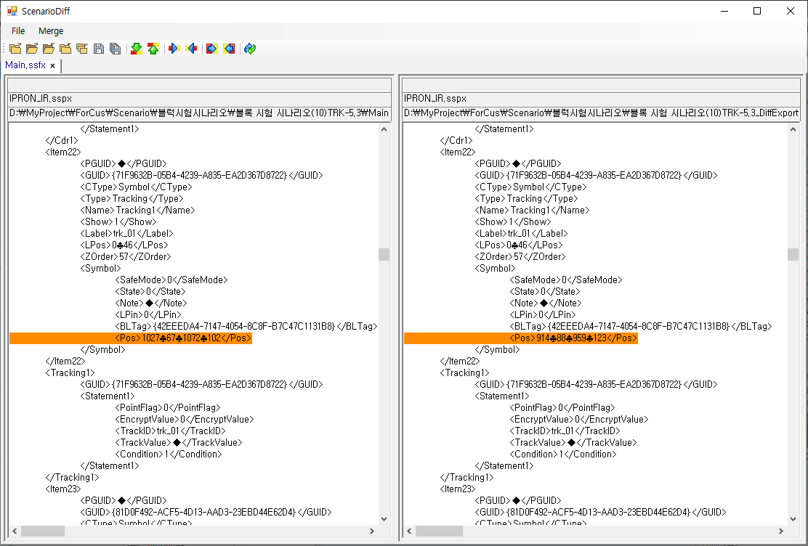
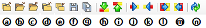

| 시나리오 형상관리 - Diff | 시작 다음 이전 |
- 선택한 로컬파일(Working Copy File)과 Head Revision의 내용을 비교하여 변경된 부분을 보여줍니다. - 비교하는 양쪽파일을 수정할 수 있으며 Diff 화면에서 파일의 변경된 부분을 더블클릭 시 SCE의 해당 파일, 아이템으로 이동합니다. - SCE Solution View, File View에서 개별 파일 선택비교와 프로젝트 파일을 선택하여 소속된 전체파일을 Diff Dialog 에서 비교를 할 수 있습니다.



a : 솔루션 오픈(Ctrl + Shift +O) b : 파일 오픈(Ctrl + O) c : 파일 닫기(Ctrl + C) d : 현재 비교파일 제외하고 모두 닫기(솔루션 비교에서) e : 모든 비교파일 닫기(Ctrl + Shift + C) f : 변경내용 저장(Ctrl + S) g : 변경한 모든 파일을 저장(Ctrl + Shift + S) h : 다음 다른내용 이동(Alt + Down Arrow) i : 이전 다른내용 이동(Alt + Up Arrow) j : 비교창 왼쪽의 선택된 변경 내용을 오픈쪽 창으로 복사(Alt + Right Arrow) k : 비교창 오른쪽의 선택된 변경 내용을 왼쪽 창으로 복사(Alt + Left Arrow) l : 비교창 왼쪽의 모든 변경 내용을 오른쪽 창으로 복사 m : 비교창 오른쪽의 모든 변경 내용을 왼쪽 창으로 복사 n : Refresh
|
| Copyrights(C) Bridgetec.co.kr. All Rights Reserved | 시작 다음 이전 |